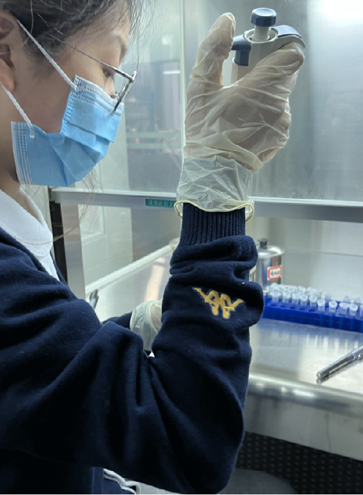
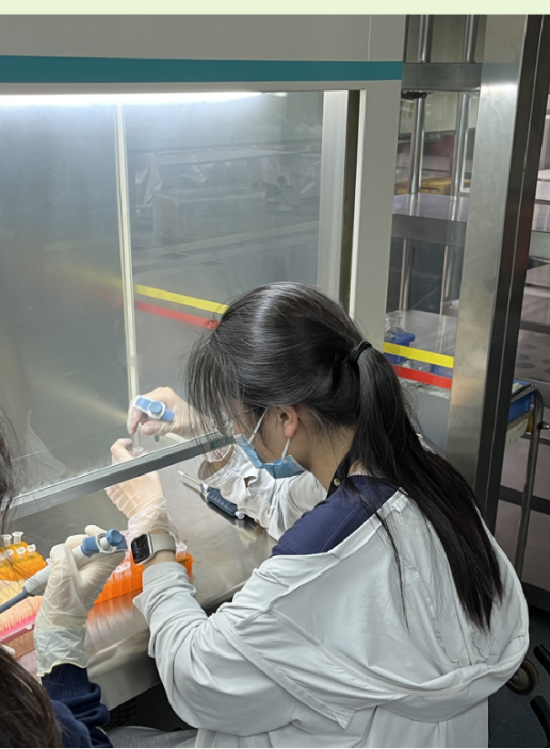
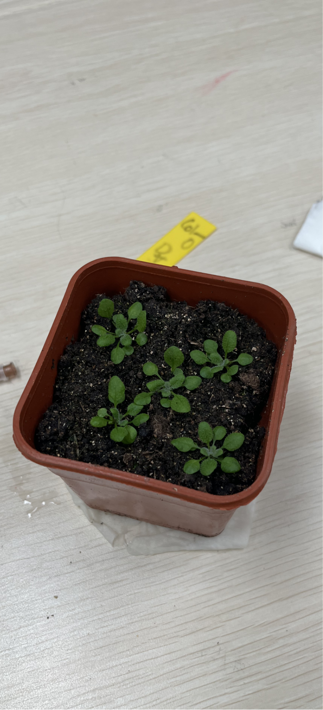
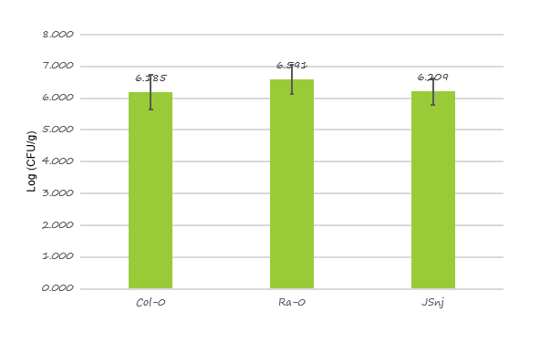

探究拟南芥抗菌性
研究背景
野生的拟南芥在世界上的地理分布广泛，可以适应多样的环境，有很多适应性的性状值得研究。
拟南芥生长周期短，发育快，为自花授粉，是遗传学研究的常用材料。
因此，我们决定以江苏南京拟南芥种群为例，研究拟南芥野生种群是否在细菌抗性上存在差异。
聚焦问题
拟南芥种群对于丁香假单胞菌的细菌抗性
现实意义
中国的拟南芥可以用于探究多种适应性表型的遗传机制，为被子植物的适应性演化提供更多的实验证据。
研究拟南芥野生种群是否在细菌抗性方面存在差异。该研究有助于拓展我们对拟南芥适应性演化的认识。



实验研究对象基本概念
拟南芥，典型的自交繁殖植物，在植物遗传研究中有领衔地位，
拟南芥生长的地理范围广，种类多样，非常有利于研究植物适应环境的问题。
实验研究基本原理
在单位鲜重的叶片内，细菌量相同，而在培养皿中体外培养出的菌落数越多代表叶片内细菌越多。
所以用单位鲜重的菌落数量的对数值，体现该种群的抗病性
实验设计
实验目的:探究拟南芥野生种群的细菌抗性
实验材料：江苏南京JSnj、Ra-0、Col-0三个种群的拟南芥、DC3000菌液、MgCl2溶液、培养皿、培养基、移液枪、离心机、离心管、分光光度计、医用注射器等。
实验操作： 1.运用分光光度计选择适宜浓度的菌液，再进行稀释。
2.选取叶片，将菌液注入叶片中，使叶片几乎完全浸润到菌液，并用吸水纸将叶片表面的菌液擦干，继续培养。
3.接菌7天后，分组称叶片鲜重
4.研磨叶片，用10mol/L的MgCl溶液配成叶片浆液进行梯度稀释，选取-3梯度接种在培养基上
5.观察记录菌落数量
数据分析:菌落数在一定程度上反映叶片内细菌数目。用单位鲜重的菌落数量的对数值，体现该种群的抗病性。
实验结果

计算检验
本操作旨在比较实验组和正负对照组的单位鲜重菌落数是否存在显著差异，从而判断江苏南京种群是否存在抗菌性，三组样本量均为7个。为方便计算，先取对数值，再采用独立样本t检验分析，结果显示如下图柱状图所示。表明组间差异不具有统计学意义。

表1 Col-0
| 鲜重/g | 菌落数 | 单位鲜重菌落数 | 对数值 |
|---|---|---|---|
| 0.04 | 1.00 | 555555.56 | 5.74 |
| 0.04 | 29.00 | 16111111.11 | 7.21 |
| 0.07 | 2.00 | 634920.63 | 5.80 |
| 0.04 | 3.00 | 1666666.67 | 6.22 |
| 0.05 | 0.00 | 0.00 | #NUM! |
| 0.05 | 2.00 | 888888.89 | 5.95 |
| 0.04 | 1.00 | 555555.56 | 5.74 |
表2 Ra-0
| 鲜重/g | 菌落数 | 单位鲜重菌落数 | 对数值 |
|---|---|---|---|
| 0.05 | 3.00 | 1333333.33 | 6.12 |
| 0.06 | 12.00 | 4444444.44 | 6.65 |
| 0.04 | 0.00 | 0.00 | #NUM! |
| 0.07 | 6.00 | 1904761.91 | 6.28 |
| 0.03 | 4.00 | 2962962.96 | 6.47 |
| 0.05 | 61.00 | 27111111.11 | 7.43 |
| 0.05 | 3.00 | 1333333.33 | 6.12 |
表3 JSn j
| 鲜重/g | 菌落数 | 单位鲜重菌落数 | 对数值 |
|---|---|---|---|
| 0.05 | 2.00 | 888888.89 | 5.95 |
| 0.03 | 1.00 | 740740.74 | 5.87 |
| 0.03 | 2.00 | 1481481.48 | 6.17 |
| 0.03 | 1.00 | 740740.74 | 5.87 |
| 0.02 | 10.00 | 11111111.11 | 7.05 |
| 0.02 | 2.00 | 2222222.22 | 6.35 |
| 0.05 | 2.00 | 888888.89 | 5.95 |
实验反思
1.DC3000注射菌液的选择 DC3000菌液浓度测定值不准确。 在从对照管内吸取菌液时，吸取原菌液10.5μL，由于吸取液体较少不易观察，可能吸取的菌液体积有误差。
2.拟南芥的细菌接种 用注射器吸取菌液接种前未将菌液摇匀； Ra-0拟南芥叶片较大，注射细菌时叶片上可能有较多细菌未被完全擦除； JSnj和Col-0种群叶片较小，注射时未将整个叶片注射完全。
3.拟南芥的叶片研磨 叶片研磨时间不一； 研磨时间较长，离心管有微微发热现象，在此过程中可能杀死了部分细菌。
4.梯度稀释和点样 无菌操作不规范；点样时有两个液滴出现了交融现象，但根据最后菌落数据显示无明显影响。